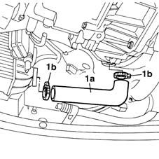

1048B14 air delivery pipe between turbo charger and heat exchanger - replace
- Path
- Procedures > 10 ENGINE UNIT > 1048 ENGINE AIR SUPPLY CIRCUIT > 1048B pressure air circuit > 1048B14 air delivery pipe between turbo charger and heat exchanger - replace
- Kind
- repair procedure (removal / refitting; the operation number is the code)
- Applies to
- engines: 1.9 JTD 8V; all production periods
- Interactive page
- https://sloeber94.github.io/elrnDB-fMltpl/en/#/2891391
Applies to: engines: 1.9 JTD 8V; all production periods
 Removing
Removing
 Refitting
RefittingPlace the car on a lift.
Raise the lift.
1. Remove air outlet sleeve (1a) by removing clamp (1b).

Applies to: engines: 1.9 JTD 8V; all production periods
Refitting
RemovingFit the air outlet sleeve.
Secure the pipe using clamps.
Remove the car from the lift.